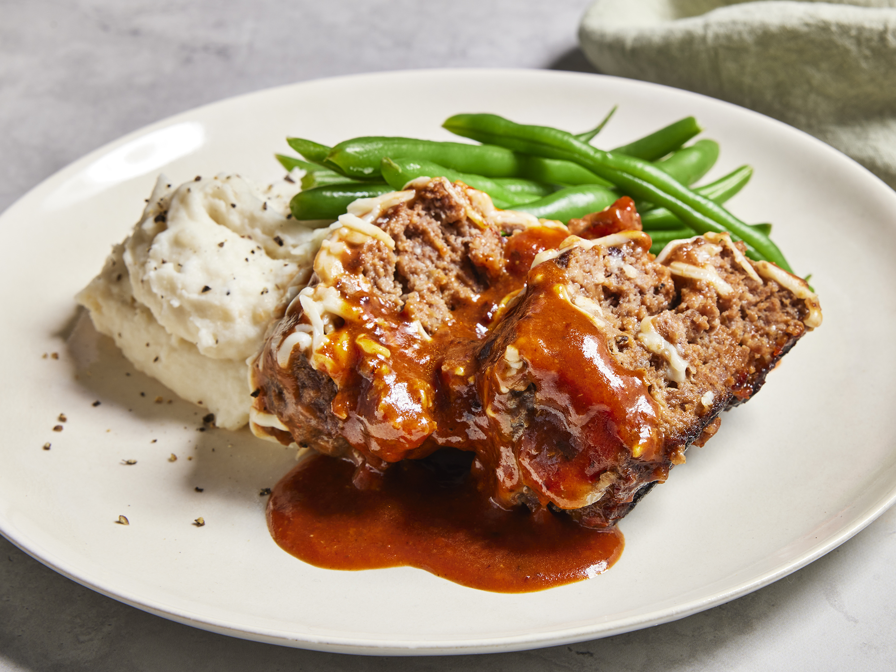

MEATLOAF

Description
Meatloaf is a dish of ground meat that has been combined with other
ingredients and formed into the shape of a loaf, then baked or smoked. The
final shape is either hand-formed on a baking tray, or pan-formed by
cooking it in a loaf pan.[1] It is usually made with ground beef, although
ground lamb, pork, veal, venison, poultry, and seafood are also used,
sometimes in combination.
Vegetarian adaptations of meatloaf may use imitation meat or pulses. The
cooked meatloaf can be sliced like a loaf of bread to make individual
portions. It can easily become dry; therefore, various techniques exist to
keep the dish moist, like mixing in bread crumbs and egg, covering it with
sauce, wrapping it, or using moisture-enhancing ingredients in the
mixture, such as filling it with fatty meats, rich cheeses, or vegetables.
Ingredients
- 1 (10.75 ounce) can condensed tomato soup, divided
- 1 1/2pounds ground beef
- ½ cup dry bread crumbs
- 1 egg, lightly beaten
- ¼ cup chopped onion
- 1 teaspoon salt
- 1 teaspoon pepper
- ¼ cup water
- ½ teaspoon prepared yellow mustard
- ½ cup shredded mozzarella cheese
Steps
-
In a large bowl, mix together 1/4 cup of the tomato soup, ground beef,
bread crumbs, egg, onion, salt and pepper using your hands. Shape firmly
into two loaves.
-
Heat a large deep skillet over medium-high heat. Brown the meatloaves in
the hot skillet, then reduce heat to medium and cover with a lid. Simmer
for about 25 minutes, or until meat is cooked through.
-
Spoon the fat from the skillet, and stir in the remaining soup, water,
and mustard. Top with mozzarella cheese, and let simmer uncovered for 10
minutes, stirring sauce occasionally.